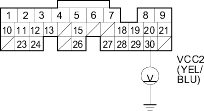
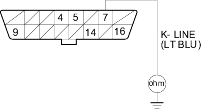

- Check for continuity between ECM/PCM connector terminal A20 and body ground.

Is there continuity?
YES |
- Repair short in the wire between the ECM/PCM (A20) and the EGR valve position sensor, knock sensor or TP sensor, or repair short in the wire between the ECM/PCM (A8) and the knock sensor. |
NO |
- Substitute a known-good ECM/PCM and recheck (see page 11-313). If symptom/indication goes away, replace the original ECM/PCM. |

- Turn the ignition switch OFF.
- Connect a scan tool/Honda PGM Tester (see page 11-311).
- Turn the ignition switch ON (II), and read the scan tool/Honda PGM Tester.
Does the scan tool/Honda PGM Tester communicate with the ECM/PCM?
YES |
- Go to step 77. |
NO |
- Go to step 73. |
- Turn the ignition switch OFF.
- Disconnect ECM/PCM connector E (31P).
- Check for continuity between body ground and data link connector (DLC) terminal No. 7.

Terminal side of male terminals
Is there continuity?
YES |
- Repair short in the wire between the DLC and the ECM/PCM (E23). After repairing it, check the DTC with the scan tool/Honda PGM Tester and go to the DTC Troubleshooting Index. |
NO |
- Go to step 76. |